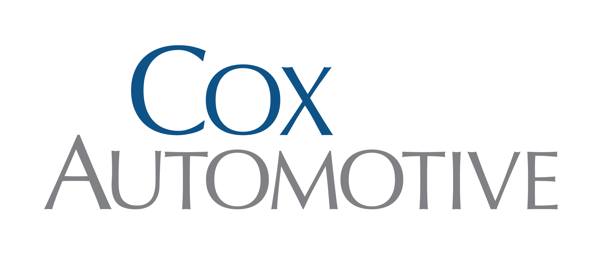

I'm Ian — a product designer based in South Carolina. I solve complex problems through thoughtful, user-centered design.

I've built AI tools into every phase of my workflow — not as a shortcut, but as a way to spend more time on the design decisions that actually matter. The key to using AI effectively is knowing what you need out of it. I'm not relying on AI to tell me what needs to be done — I'm using it to drive the process forward faster, because I already know where I'm going.
At the start of a project I use Copilot and Gemini to compile meeting transcripts and notes into clean text files. Those files go into a Claude Project, turning it into an effective co-worker that has full context on goals, requirements, and decisions. From there I can ask Claude to surface high-level objectives, summarize requirements, or dig into specifics — without hunting through old notes or recordings.
In early design phases I use Claude to generate rough HTML prototypes — quick, functional, and just polished enough to communicate an idea to stakeholders before a follow-up meeting. When a more refined version is needed, I extract requirements from Claude, then feed those into Copilot or Gemini to generate a detailed, high-character prompt — which I give back to Claude to produce a more polished, colorful, production-like prototype.
When a high-fidelity prototype is needed — one that's accurately themed and styled to reflect the real finished product — I use Figma Make. To get the best output, I use Claude to generate a structured list of requirements based on project information and early prototypes, then use Copilot or Gemini to transform that into a detailed, high-character prompt optimized for Figma Make's input. The result is a prototype that closely mirrors what the final product will look and feel like.
Once prototyping wraps up, the path to deliverables depends on what was used to build them. If I prototyped in Figma Make, I export the frames directly into design files and refine them manually — swapping in proper design system components and making adjustments as needed. If the prototype was built in Claude, the project is typically straightforward enough that I can move straight to hand-building the designs using design system components quickly.
Either way, the final step is getting work into the development backlog. I use Claude to draft features and user stories quickly — feeding in the project context already stored in the Claude Project to produce well-structured, accurate stories that are ready to hand off without a lot of back and forth.
Open to new opportunities and interesting collaborations.
Get in Touch